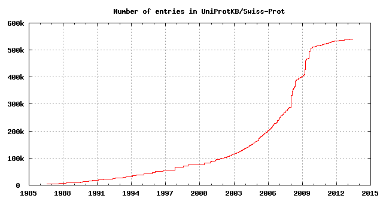
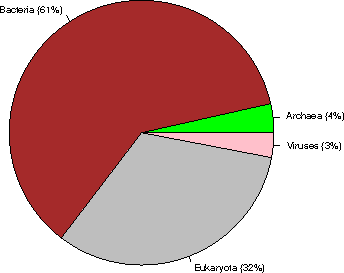
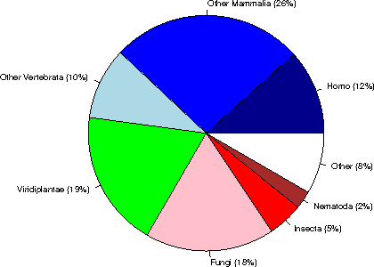
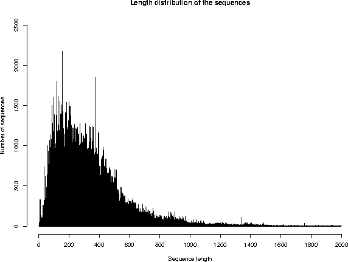
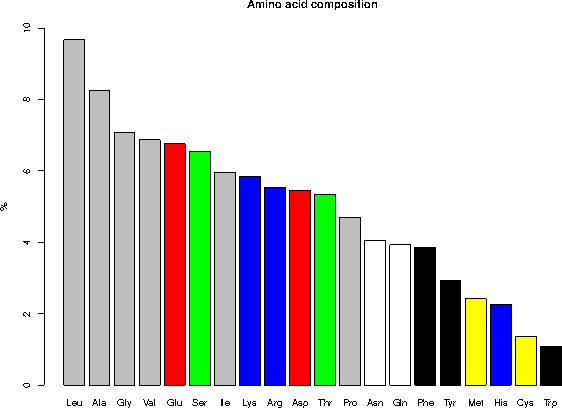

UniProtKB/Swiss-Prot protein knowledgebase release 2013_05 statistics
1. INTRODUCTION
Release 2013_05 of 01-May-13 of UniProtKB/Swiss-Prot contains 540052 sequence entries,
comprising 191770152 amino acids abstracted from 218790 references.
226 sequences have been added since release 2013_04, the sequence data of
27 existing entries has been updated and the annotations of
414816 entries have been revised.
Number of fragments: 9067
Number of additional sequences produced by alternative splicing, initiation or promoter usage, or ribosomal frameshifting: 34255
Protein existence (PE): entries %
1: Evidence at protein level 78950 14.6%
2: Evidence at transcript level 64265 11.9%
3: Inferred from homology 379222 70.2%
4: Predicted 15721 2.9%
5: Uncertain 1894 0.4%
The growth of the database is summarized below.

2. TAXONOMIC ORIGIN
Total number of species represented in this release of UniProtKB/Swiss-Prot: 12980
The first twenty species represent 113365 sequences: 21 % of the total
number of entries.
2.1 Table of the frequency of occurrence of species
Species represented 1x: 5435
2x: 1886
3x: 986
4x: 640
5x: 470
6x: 387
7x: 285
8x: 220
9x: 202
10x: 120
11- 20x: 692
21- 50x: 404
51-100x: 212
>100x: 1041
2.2 Table of the most represented species
------ --------- --------------------------------------------
Number Frequency Species
------ --------- --------------------------------------------
1 20255 Homo sapiens (Human)
2 16612 Mus musculus (Mouse)
3 12019 Arabidopsis thaliana (Mouse-ear cress)
4 7853 Rattus norvegicus (Rat)
5 6621 Saccharomyces cerevisiae (strain ATCC 204508 / S288c) (Baker's yeast)
6 5977 Bos taurus (Bovine)
7 5089 Schizosaccharomyces pombe (strain 972 / ATCC 24843) (Fission yeast)
8 4431 Escherichia coli (strain K12)
9 4188 Bacillus subtilis (strain 168)
10 4126 Dictyostelium discoideum (Slime mold)
11 3425 Caenorhabditis elegans
12 3365 Xenopus laevis (African clawed frog)
13 3195 Drosophila melanogaster (Fruit fly)
14 3031 Oryza sativa subsp. japonica (Rice)
15 2883 Danio rerio (Zebrafish) (Brachydanio rerio)
16 2253 Gallus gallus (Chicken)
17 2218 Pongo abelii (Sumatran orangutan) (Pongo pygmaeus abelii)
18 2022 Mycobacterium tuberculosis
19 2015 Escherichia coli O157:H7
20 1787 Methanocaldococcus jannaschii
21 1771 Salmonella typhimurium (strain LT2 / SGSC1412 / ATCC 700720)
22 1707 Haemophilus influenzae (strain ATCC 51907 / DSM 11121 / KW20 / Rd)
23 1692 Xenopus tropicalis (Western clawed frog) (Silurana tropicalis)
24 1684 Escherichia coli O6:H1 (strain CFT073 / ATCC 700928 / UPEC)
25 1678 Shigella flexneri
26 1412 Sus scrofa (Pig)
27 1346 Salmonella typhi
28 1243 Pseudomonas aeruginosa (strain ATCC 15692 / PAO1 / 1C / PRS 101 / LMG 12228)
29 1242 Mycobacterium bovis (strain ATCC BAA-935 / AF2122/97)
30 1170 Macaca fascicularis (Crab-eating macaque) (Cynomolgus monkey)
31 1036 Synechocystis sp. (strain PCC 6803 / Kazusa)
32 1018 Yersinia pestis
33 1014 Archaeoglobus fulgidus
34 950 Vibrio cholerae serotype O1 (strain ATCC 39315 / El Tor Inaba N16961)
35 930 Salmonella paratyphi A (strain ATCC 9150 / SARB42)
36 926 Ashbya gossypii (strain ATCC 10895 / CBS 109.51 / FGSC 9923 / NRRL Y-1056)
37 925 Staphylococcus aureus (strain N315)
38 923 Staphylococcus aureus (strain Mu50 / ATCC 700699)
39 909 Acanthamoeba polyphaga mimivirus (APMV)
40 904 Kluyveromyces lactis
41 899 Staphylococcus aureus (strain COL)
42 895 Staphylococcus aureus (strain MW2)
43 889 Escherichia coli O6:K15:H31 (strain 536 / UPEC)
44 889 Staphylococcus aureus (strain MSSA476)
45 889 Oryctolagus cuniculus (Rabbit)
46 888 Staphylococcus aureus (strain MRSA252)
47 882 Salmonella choleraesuis (strain SC-B67)
48 878 Shigella sonnei (strain Ss046)
49 869 Rhizobium meliloti (strain 1021) (Ensifer meliloti) (Sinorhizobium meliloti)
50 863 Yersinia pseudotuberculosis serotype I (strain IP32953)
51 861 Candida glabrata
52 841 Escherichia coli O9:H4 (strain HS)
53 835 Neurospora crassa
54 834 Escherichia coli O139:H28 (strain E24377A / ETEC)
55 829 Shigella boydii serotype 4 (strain Sb227)
56 825 Escherichia coli (strain UTI89 / UPEC)
57 821 Shigella dysenteriae serotype 1 (strain Sd197)
58 819 Escherichia coli (strain ATCC 8739 / DSM 1576 / Crooks)
59 803 Canis familiaris (Dog) (Canis lupus familiaris)
60 791 Escherichia coli (strain SMS-3-5 / SECEC)
61 787 Vibrio parahaemolyticus serotype O3:K6 (strain RIMD 2210633)
62 783 Erwinia carotovora subsp. atroseptica (strain SCRI 1043 / ATCC BAA-672)
63 782 Aquifex aeolicus (strain VF5)
64 775 Pasteurella multocida (strain Pm70)
65 775 Emericella nidulans
66 771 Escherichia coli (strain K12 / DH10B)
67 765 Escherichia coli O127:H6 (strain E2348/69 / EPEC)
68 765 Escherichia coli (strain K12 / MC4100 / BW2952)
69 764 Escherichia coli O17:K52:H18 (strain UMN026 / ExPEC)
70 762 Escherichia coli (strain 55989 / EAEC)
71 761 Escherichia coli O8 (strain IAI1)
72 760 Shigella flexneri serotype 5b (strain 8401)
73 759 Staphylococcus epidermidis (strain ATCC 35984 / RP62A)
74 758 Staphylococcus epidermidis (strain ATCC 12228)
75 756 Escherichia coli (strain SE11)
76 756 Streptomyces coelicolor (strain ATCC BAA-471 / A3(2) / M145)
77 756 Escherichia coli O45:K1 (strain S88 / ExPEC)
78 753 Escherichia coli O7:K1 (strain IAI39 / ExPEC)
79 748 Escherichia coli O157:H7 (strain EC4115 / EHEC)
80 744 Photorhabdus luminescens subsp. laumondii (strain TT01)
81 740 Staphylococcus aureus (strain NCTC 8325)
82 736 Bacillus anthracis
83 736 Bacillus halodurans
84 735 Yersinia enterocolitica serotype O:8 / biotype 1B (strain 8081)
85 733 Vibrio vulnificus (strain CMCP6)
86 731 Escherichia coli O81 (strain ED1a)
87 721 Salmonella enteritidis PT4 (strain P125109)
88 720 Candida albicans (strain SC5314 / ATCC MYA-2876) (Yeast)
89 717 Vibrio vulnificus (strain YJ016)
90 716 Salmonella paratyphi B (strain ATCC BAA-1250 / SPB7)
91 715 Yersinia pestis bv. Antiqua (strain Nepal516)
92 714 Zea mays (Maize)
93 714 Salmonella paratyphi A (strain AKU_12601)
94 713 Klebsiella pneumoniae subsp. pneumoniae (strain ATCC 700721 / MGH 78578)
95 713 Enterobacter sp. (strain 638)
96 713 Salmonella agona (strain SL483)
97 713 Escherichia coli O1:K1 / APEC
98 713 Salmonella newport (strain SL254)
99 713 Yersinia pseudotuberculosis serotype O:1b (strain IP 31758)
100 712 Salmonella schwarzengrund (strain CVM19633)
101 711 Yersinia pestis bv. Antiqua (strain Antiqua)
102 710 Salmonella heidelberg (strain SL476)
103 702 Salmonella dublin (strain CT_02021853)
104 698 Shigella boydii serotype 18 (strain CDC 3083-94 / BS512)
105 696 Klebsiella pneumoniae (strain 342)
106 695 Escherichia fergusonii (strain ATCC 35469 / DSM 13698 / CDC 0568-73)
107 693 Pseudomonas putida (strain KT2440)
108 689 Nostoc sp. (strain PCC 7120 / UTEX 2576)
109 688 Pan troglodytes (Chimpanzee)
110 687 Mycoplasma pneumoniae (strain ATCC 29342 / M129)
111 683 Salmonella gallinarum (strain 287/91 / NCTC 13346)
112 678 Citrobacter koseri (strain ATCC BAA-895 / CDC 4225-83 / SGSC4696)
113 675 Pseudomonas syringae pv. tomato (strain DC3000)
114 670 Serratia proteamaculans (strain 568)
115 668 Mycobacterium leprae (strain TN)
116 667 Yersinia pestis (strain Pestoides F)
117 666 Staphylococcus aureus (strain USA300)
118 658 Rhizobium sp. (strain NGR234)
119 656 Bradyrhizobium japonicum (strain USDA 110)
120 656 Neosartorya fumigata (strain ATCC MYA-4609 / Af293 / CBS 101355 / FGSC A1100)
121 653 Debaryomyces hansenii
122 652 Bacillus cereus (strain ATCC 14579 / DSM 31)
123 646 Escherichia coli
124 643 Staphylococcus aureus (strain bovine RF122 / ET3-1)
125 642 Salmonella arizonae (strain ATCC BAA-731 / CDC346-86 / RSK2980)
126 642 Yarrowia lipolytica (strain CLIB 122 / E 150) (Yeast) (Candida lipolytica)
127 638 Yersinia pseudotuberculosis serotype O:3 (strain YPIII)
128 635 Shewanella oneidensis (strain MR-1)
129 634 Yersinia pseudotuberculosis serotype IB (strain PB1/+)
130 632 Agrobacterium tumefaciens (strain C58 / ATCC 33970)
131 622 Cronobacter sakazakii (strain ATCC BAA-894) (Enterobacter sakazakii)
132 622 Oryza sativa subsp. indica (Rice)
133 616 Treponema pallidum (strain Nichols)
134 613 Methanothermobacter thermautotrophicus
135 612 Staphylococcus haemolyticus (strain JCSC1435)
136 606 Rhizobium loti (strain MAFF303099) (Mesorhizobium loti)
137 605 Xanthomonas campestris pv. campestris (strain ATCC 33913 / NCPPB 528 / LMG 568)
138 602 Ralstonia solanacearum (strain GMI1000) (Pseudomonas solanacearum)
139 602 Listeria monocytogenes serovar 1/2a (strain ATCC BAA-679 / EGD-e)
140 602 Photobacterium profundum (Photobacterium sp. (strain SS9))
141 602 Staphylococcus saprophyticus subsp. saprophyticus
142 601 Salmonella paratyphi C (strain RKS4594)
143 600 Yersinia pestis bv. Antiqua (strain Angola)
144 591 Listeria innocua serovar 6a (strain CLIP 11262)
145 590 Bacillus cereus (strain ATCC 10987)
146 589 Pectobacterium carotovorum subsp. carotovorum (strain PC1)
147 586 Rickettsia prowazekii (strain Madrid E)
148 581 Helicobacter pylori (strain ATCC 700392 / 26695) (Campylobacter pylori)
149 579 Neisseria meningitidis serogroup B (strain MC58)
150 576 Brucella suis biovar 1 (strain 1330)
151 572 Brucella melitensis biotype 1 (strain 16M / ATCC 23456 / NCTC 10094)
152 572 Buchnera aphidicola subsp. Acyrthosiphon pisum (strain APS)
153 568 Caenorhabditis briggsae
154 567 Bacillus thuringiensis subsp. konkukian (strain 97-27)
155 566 Pseudomonas syringae pv. syringae (strain B728a)
156 565 Helicobacter pylori (strain J99) (Campylobacter pylori J99)
157 564 Vibrio fischeri (strain ATCC 700601 / ES114)
158 564 Caulobacter crescentus (strain ATCC 19089 / CB15)
159 564 Pseudomonas aeruginosa (strain UCBPP-PA14)
160 562 Bacillus licheniformis (strain DSM 13 / ATCC 14580)
161 562 Buchnera aphidicola subsp. Schizaphis graminum (strain Sg)
162 561 Bacillus cereus (strain ZK / E33L)
163 557 Clostridium acetobutylicum
164 556 Xanthomonas axonopodis pv. citri (strain 306)
165 552 Oceanobacillus iheyensis (strain DSM 14371 / JCM 11309 / KCTC 3954 / HTE831)
166 552 Neisseria meningitidis serogroup A / serotype 4A (strain Z2491)
167 552 Pseudomonas fluorescens (strain Pf0-1)
168 546 Pseudomonas fluorescens (strain Pf-5 / ATCC BAA-477)
169 545 Pseudomonas syringae pv. phaseolicola (strain 1448A / Race 6)
170 533 Lactococcus lactis subsp. lactis (strain IL1403) (Streptococcus lactis)
171 532 Thermotoga maritima (strain ATCC 43589 / MSB8 / DSM 3109 / JCM 10099)
172 531 Erwinia tasmaniensis (strain DSM 17950 / Et1/99)
173 529 Sodalis glossinidius (strain morsitans)
174 529 Listeria monocytogenes serotype 4b (strain F2365)
175 522 Bordetella bronchiseptica (strain ATCC BAA-588 / NCTC 13252 / RB50)
176 522 Xylella fastidiosa (strain 9a5c)
177 515 Chromobacterium violaceum
178 515 Bordetella pertussis (strain Tohama I / ATCC BAA-589 / NCTC 13251)
179 513 Corynebacterium glutamicum
180 512 Xylella fastidiosa (strain Temecula1 / ATCC 700964)
181 511 Pseudomonas aeruginosa (strain PA7)
182 511 Vibrio cholerae serotype O1 (strain ATCC 39541 / Ogawa 395 / O395)
183 510 Haemophilus ducreyi (strain 35000HP / ATCC 700724)
184 508 Staphylococcus aureus (strain Newman)
185 508 Bordetella parapertussis (strain 12822 / ATCC BAA-587 / NCTC 13253)
186 507 Buchnera aphidicola subsp. Baizongia pistaciae (strain Bp)
187 507 Geobacillus kaustophilus (strain HTA426)
188 505 Streptomyces avermitilis
189 502 Streptococcus pneumoniae serotype 4 (strain ATCC BAA-334 / TIGR4)
190 501 Deinococcus radiodurans
191 500 Pseudomonas entomophila (strain L48)
192 499 Brucella abortus biovar 1 (strain 9-941)
193 497 Rickettsia conorii (strain ATCC VR-613 / Malish 7)
194 496 Bacillus clausii (strain KSM-K16)
195 495 Burkholderia pseudomallei (strain K96243)
196 495 Haemophilus influenzae (strain 86-028NP)
197 494 Proteus mirabilis (strain HI4320)
198 492 Methanosarcina acetivorans (strain ATCC 35395 / DSM 2834 / JCM 12185 / C2A)
199 492 Bacillus amyloliquefaciens (strain FZB42)
200 491 Xanthomonas campestris pv. campestris (strain 8004)
201 490 Vibrio harveyi (strain ATCC BAA-1116 / BB120)
202 487 Shewanella sp. (strain MR-7)
203 486 Mannheimia succiniciproducens (strain MBEL55E)
204 484 Pseudomonas aeruginosa (strain LESB58)
205 484 Staphylococcus aureus (strain Mu3 / ATCC 700698)
206 484 Shewanella sp. (strain MR-4)
207 483 Mycoplasma genitalium (strain ATCC 33530 / G-37 / NCTC 10195)
208 481 Thermosynechococcus elongatus (strain BP-1)
209 480 Pyrococcus furiosus (strain ATCC 43587 / DSM 3638 / JCM 8422 / Vc1)
210 480 Acinetobacter sp. (strain ADP1)
211 479 Pyrococcus horikoshii
212 478 Synechococcus elongatus (strain PCC 7942) (Anacystis nidulans R2)
213 475 Pseudomonas putida (strain F1 / ATCC 700007)
214 474 Burkholderia sp. (strain 383) (Burkholderia cepacia
215 474 Brucella abortus (strain 2308)
216 473 Streptococcus pneumoniae (strain ATCC BAA-255 / R6)
217 473 Aspergillus oryzae (strain ATCC 42149 / RIB 40) (Yellow koji mold)
218 469 Methanosarcina mazei
219 468 Pyrococcus abyssi (strain GE5 / Orsay)
220 468 Halobacterium salinarum (strain ATCC 700922 / JCM 11081 / NRC-1)
221 468 Clostridium perfringens (strain 13 / Type A)
222 466 Xanthomonas campestris pv. vesicatoria (strain 85-10)
223 466 Shewanella frigidimarina (strain NCIMB 400)
224 466 Pseudomonas putida (strain GB-1)
225 466 Cupriavidus necator (strain ATCC 17699 / H16 / DSM 428 / Stanier 337)
226 464 Aeromonas hydrophila subsp. hydrophila (strain ATCC 7966 / NCIB 9240)
227 463 Rhodopseudomonas palustris (strain ATCC BAA-98 / CGA009)
228 463 Shewanella sp. (strain ANA-3)
229 462 Burkholderia mallei (strain ATCC 23344)
230 462 Anabaena variabilis (strain ATCC 29413 / PCC 7937)
231 461 Lactobacillus plantarum (strain ATCC BAA-793 / NCIMB 8826 / WCFS1)
232 460 Mycobacterium smegmatis (strain ATCC 700084 / mc(2)155)
233 459 Cupriavidus pinatubonensis (strain JMP134 / LMG 1197) (Alcaligenes eutrophus)
234 459 Rhodobacter sphaeroides (strain ATCC 17023 / 2.4.1 / NCIB 8253 / DSM 158)
235 458 Enterococcus faecalis (strain ATCC 700802 / V583)
236 455 Staphylococcus aureus (strain JH1)
237 454 Methylococcus capsulatus (strain ATCC 33009 / NCIMB 11132 / Bath)
238 454 Ovis aries (Sheep)
239 454 Xanthomonas oryzae pv. oryzae (strain MAFF 311018)
240 453 Pseudomonas putida (strain W619)
241 453 Rickettsia felis (strain ATCC VR-1525 / URRWXCal2) (Rickettsia azadi)
242 452 Shewanella baltica (strain OS185)
243 451 Aeromonas salmonicida (strain A449)
244 450 Nicotiana tabacum (Common tobacco)
245 449 Thermoanaerobacter tengcongensis
246 449 Staphylococcus aureus (strain JH9)
247 449 Hahella chejuensis (strain KCTC 2396)
248 449 Mycobacterium paratuberculosis (strain ATCC BAA-968 / K-10)
249 448 Sulfolobus solfataricus (strain ATCC 35092 / DSM 1617 / JCM 11322 / P2)
250 448 Streptococcus mutans serotype c (strain ATCC 700610 / UA159)
2.3 Taxonomic distribution of the sequences

Kingdom sequences (% of the database)
Archaea 19010 ( 4%)
Bacteria 328865 ( 61%)
Eukaryota 175860 ( 33%)
Viruses 16317 ( 3%)
Within Eukaryota:

Category sequences (% of Eukaryota) (% of the complete database)
Human 20256 ( 12%) ( 4%)
Other Mammalia 45890 ( 26%) ( 8%)
Other Vertebrata 17402 ( 10%) ( 3%)
Viridiplantae 33813 ( 19%) ( 6%)
Fungi 30827 ( 18%) ( 6%)
Insecta 8686 ( 5%) ( 2%)
Nematoda 4300 ( 2%) ( 1%)
Other 14686 ( 8%) ( 3%)
3. SEQUENCE SIZE
Repartition of the sequences by size (excluding fragments)
From To Number From To Number
1- 50 9051 1001-1100 3742
51- 100 41384 1101-1200 2592
101- 150 57640 1201-1300 2020
151- 200 57730 1301-1400 1881
201- 250 56476 1401-1500 1507
251- 300 49964 1501-1600 730
301- 350 50142 1601-1700 567
351- 400 43390 1701-1800 467
401- 450 35483 1801-1900 426
451- 500 28578 1901-2000 352
501- 550 20328 2001-2100 212
551- 600 14602 2101-2200 287
601- 650 12258 2201-2300 293
651- 700 8838 2301-2400 176
701- 750 7289 2401-2500 138
751- 800 5180 >2500 1088
801- 850 4534
851- 900 5023
901- 950 3871
951-1000 2746

The average sequence length in UniProtKB/Swiss-Prot is 355 amino acids.
The shortest sequence is GWA_SEPOF (P83570): 2 amino acids.
The longest sequence is TITIN_MOUSE (A2ASS6): 35213 amino acids.
4. JOURNAL CITATIONS
Note: the following citation statistics reflect the number of distinct
journal citations.
Total number of journals cited in this release of UniProtKB/Swiss-Prot: 2320
4.1 Table of the frequency of journal citations
Journals cited 1x: 757
2x: 303
3x: 156
4x: 114
5x: 90
6x: 74
7x: 54
8x: 46
9x: 36
10x: 31
11- 20x: 182
21- 50x: 193
51-100x: 97
>100x: 187
4.2 List of the most cited journals in UniProtKB/Swiss-Prot
Nb Citations Journal name
-- --------- -------------------------------------------------------------
1 21058 Journal of Biological Chemistry
2 9506 Proceedings of the National Academy of Sciences of the U.S.A.
3 5689 Journal of Bacteriology
4 5031 Biochemical and Biophysical Research Communications
5 4600 Gene
6 4561 Nucleic Acids Research
7 4441 Biochemistry
8 4353 FEBS Letters
9 4215 The EMBO Journal
10 3916 Molecular and Cellular Biology
11 3705 Nature
12 3565 Journal of Molecular Biology
13 3243 European Journal of Biochemistry
14 3215 Biochimica et Biophysica Acta
15 3028 Cell
16 2572 Journal of Virology
17 2509 Genomics
18 2494 Biochemical Journal
19 2460 Science
20 2046 Molecular Microbiology
21 1870 Journal of Cell Biology
22 1846 Plant Physiology
23 1641 Plant Molecular Biology
24 1591 The American Journal of Human Genetics
25 1590 Genes and Development
26 1536 Virology
27 1505 Nature Genetics
28 1451 Human Molecular Genetics
29 1434 Oncogene
30 1345 Molecular and General Genetics
31 1336 Development
32 1311 Molecular Biology of the Cell
33 1307 Human Mutation
34 1280 The Plant Cell
35 1238 Journal of Biochemistry
36 1191 Journal of Immunology
37 1165 The Plant Journal
38 1154 Molecular Cell
39 1101 Genetics
40 1075 Structure
41 1026 Journal of General Virology
42 973 Blood
43 948 Infection and Immunity
44 941 Journal of Cell Science
45 927 Archives of Biochemistry and Biophysics
46 859 Microbiology
47 831 Developmental Biology
48 808 Cancer Research
49 793 Current Biology
50 786 Yeast
51 734 FEMS Microbiology Letters
52 674 Acta Crystallographica, Section D
53 655 Protein Science
54 647 Journal of Neuroscience
55 643 Toxicon
56 636 Applied and Environmental Microbiology
57 626 Human Genetics
58 626 Nature Structural Biology
59 622 Mechanisms of Development
60 592 Neuron
61 575 Journal of Clinical Investigation
62 563 PLoS ONE
63 546 American Journal of Physiology
64 539 Current Genetics
65 528 The Journal of Experimental Medicine
66 495 Proteins
67 484 Molecular Endocrinology
68 479 Mammalian Genome
69 469 Plant and Cell Physiology
70 467 Journal of Neurochemistry
71 459 Immunogenetics
72 448 Nature Cell Biology
73 447 Bioscience, Biotechnology, and Biochemistry
74 443 The Journal of Clinical Endocrinology and Metabolism
75 435 Endocrinology
76 429 Molecular and Biochemical Parasitology
77 416 Journal of Medical Genetics
78 398 Journal of Molecular Evolution
79 379 Molecular Biology and Evolution
80 378 Experimental Cell Research
81 377 DNA and Cell Biology
82 365 DNA Sequence
83 351 Peptides
84 328 Brain Research. Molecular Brain Research
85 325 Nature Structural and Molecular Biology
86 325 Tissue Antigens
87 324 Developmental Cell
88 322 RNA
89 320 Comparative Biochemistry and Physiology
90 316 Antimicrobial Agents and Chemotherapy
91 315 The FEBS Journal
92 308 Journal of Investigative Dermatology
93 304 Molecular Pharmacology
94 302 Planta
95 294 Biological Chemistry Hoppe-Seyler
96 285 Biology of Reproduction
97 280 Neurology
98 279 Cytogenetics and Cell Genetics
99 268 Developmental Dynamics
100 267 Genome Research
101 267 Virus Research
102 257 Journal of General Microbiology
103 257 Eukaryotic Cell
104 257 Immunity
105 254 EMBO Reports
106 253 Biochimie
107 245 Genes to Cells
108 244 Molecular Plant-Microbe Interactions
109 239 The FASEB Journal
110 237 The New England Journal of Medicine
111 232 European Journal of Immunology
112 224 Annals of Neurology
113 222 European Journal of Human Genetics
114 218 Hoppe-Seyler's Zeitschrift fur Physiologische Chemie
115 215 DNA Research
116 215 Journal of the American Chemical Society
117 211 Journal of Human Genetics
118 202 Investigative Ophthalmology and Visual Science
119 200 Archives of Microbiology
120 196 Acta Crystallographica, Section F
121 196 Nature Immunology
122 190 Archives of Virology
123 189 Journal of Experimental Botany
124 189 Journal of Cellular Biochemistry
125 187 BMC Genomics
126 187 American Journal of Medical Genetics. Part A
127 186 Molecular and Cellular Endocrinology
128 183 Molecular Immunology
129 181 Glycobiology
130 177 Clinical Genetics
131 176 Journal of Medicinal Chemistry
132 173 Diabetes
133 172 Insect Biochemistry and Molecular Biology
134 168 American Journal of Medical Genetics
135 168 Molecular Phylogenetics and Evolution
136 165 Circulation Research
137 165 International Journal of Cancer
138 164 PLoS Genetics
139 160 Molecular Genetics and Metabolism
140 159 Molecular Reproduction and Development
141 159 DNA
142 158 Traffic
143 156 Phytochemistry
144 155 Hemoglobin
145 154 Bioorganicheskaia Khimiia
146 153 Molecular and Cellular Neuroscience
147 153 Biological Chemistry
148 152 Protein Expression and Purification
149 152 Molecular Genetics and Genomics
150 150 Cell Cycle
5. STATISTICS FOR SOME LINE TYPES
The following table summarizes the total number of some UniProtKB/Swiss-Prot lines,
as well as the number of entries with at least one such line, and the
frequency of the lines.
Total Number of Average
Line type / subtype number entries per entry
------------------------------------ -------- --------- ---------
References (RL) 1040803 1.93
Journal 834398 417458 1.55 1
Submitted to EMBL/GenBank/DDBJ 197275 176260 0.37 2
Submitted to other databases 6905 6433 0.01 3
Book citation 724 710 <0.01 4
Plant Gene Register 581 569 <0.01 5
Thesis 420 417 <0.01 6
Unpublished observations 304 300 <0.01 7
Patent 190 187 <0.01 8
Worm Breeder's Gazette 6 6 <0.01 9
Total number of distinct authors cited in UniProtKB/Swiss-Prot: 335254
Total Number of Average
Line type / subtype number entries per entry Rank
------------------------------------ -------- --------- --------- ----
Comments (CC) 2424249 4.49
ALLERGEN 529 529 <0.01 27
ALTERNATIVE PRODUCTS 21995 21995 0.04 13
BIOPHYSICOCHEMICAL PROPERTIES 4926 4926 0.01 23
BIOTECHNOLOGY 345 343 <0.01 28
CATALYTIC ACTIVITY 243525 220732 0.45 5
CAUTION 9322 9149 0.02 18
COFACTOR 108080 98779 0.20 7
DEVELOPMENTAL STAGE 9848 9848 0.02 17
DISEASE 5235 3508 0.01 22
DISRUPTION PHENOTYPE 5624 5624 0.01 20
DOMAIN 39417 34760 0.07 10
ENZYME REGULATION 11155 11155 0.02 15
FUNCTION 421407 404176 0.78 2
INDUCTION 15203 15203 0.03 14
INTERACTION 10143 10143 0.02 16
MASS SPECTROMETRY 5526 4223 0.01 21
MISCELLANEOUS 32794 30321 0.06 12
PATHWAY 131615 119772 0.24 6
PHARMACEUTICAL 92 92 <0.01 29
POLYMORPHISM 892 839 <0.01 24
PTM 44440 34768 0.08 8
RNA EDITING 627 627 <0.01 25
SEQUENCE CAUTION 41129 41129 0.08 9
SIMILARITY 641125 515434 1.19 1
SUBCELLULAR LOCATION 327068 321168 0.61 3
SUBUNIT 244051 244051 0.45 4
TISSUE SPECIFICITY 38665 38665 0.07 11
TOXIC DOSE 551 516 <0.01 26
WEB RESOURCE 8920 7125 0.02 19
Total number of comment topics: 29
Total Number of Average
Line type / subtype number entries per entry Rank
------------------------------------ -------- --------- --------- ----
Features (FT) 3706027 6.86
ACT_SITE 142292 86996 0.26 9
BINDING 286709 77052 0.53 4
CA_BIND 3914 1633 0.01 35
CARBOHYD 107323 27491 0.20 15
CHAIN 546770 533837 1.01 1
COILED 20247 13903 0.04 26
COMPBIAS 54364 28834 0.10 18
CONFLICT 127739 44750 0.24 12
CROSSLNK 6778 3916 0.01 34
DISULFID 109296 30025 0.20 14
DNA_BIND 10373 9448 0.02 31
DOMAIN 161029 95770 0.30 8
HELIX 179812 17555 0.33 6
INIT_MET 14247 14247 0.03 27
INTRAMEM 2139 919 <0.01 37
LIPID 11919 7560 0.02 30
METAL 315972 78102 0.59 3
MOD_RES 166391 60821 0.31 7
MOTIF 35789 23182 0.07 24
MUTAGEN 43355 10073 0.08 22
NON_CONS 2042 750 <0.01 38
NON_STD 354 279 <0.01 39
NON_TER 12212 9333 0.02 29
NP_BIND 119716 73692 0.22 13
PEPTIDE 10303 7027 0.02 32
PROPEP 12669 10900 0.02 28
REGION 131751 67214 0.24 10
REPEAT 95117 14039 0.18 16
SIGNAL 38250 38240 0.07 23
SITE 46943 26229 0.09 19
STRAND 188432 16583 0.35 5
TOPO_DOM 130298 27048 0.24 11
TRANSIT 8345 8241 0.02 33
TRANSMEM 356212 73525 0.66 2
TURN 43812 14215 0.08 21
UNSURE 3298 707 0.01 36
VAR_SEQ 45036 19138 0.08 20
VARIANT 85405 16740 0.16 17
ZN_FING 29374 12907 0.05 25
Total number of feature keys: 39
Total Number of Average
Line type / subtype number entries per entry Rank Category
------------------------------------ -------- --------- --------- ---- -------------------------------------------
Cross-references (DR) 15789332 29.24
Allergome 1496 936 <0.01 101 Protein family/group databases
ArachnoServer 763 755 <0.01 111 Organism-specific databases
ArrayExpress 36158 36158 0.07 47 Gene expression databases
Bgee 38772 38772 0.07 45 Gene expression databases
BindingDB 5034 5034 0.01 85 Other
BioCyc 229675 220622 0.43 22 Enzyme and pathway databases
BRENDA 4318 4308 0.01 92 Enzyme and pathway databases
CAZy 7626 6866 0.01 75 Protein family/group databases
CGD 700 678 <0.01 112 Organism-specific databases
ChEMBL 5222 5222 0.01 83 Other
ChiTaRS 12531 12526 0.02 70 Other
CleanEx 30085 29444 0.06 51 Gene expression databases
COMPLUYEAST-2DPAGE 99 98 <0.01 125 2D gel databases
ConoServer 916 834 <0.01 107 Organism-specific databases
CTD 70094 69421 0.13 39 Organism-specific databases
CYGD 5596 5593 0.01 80 Organism-specific databases
dictyBase 4203 4086 0.01 94 Organism-specific databases
DIP 14215 14124 0.03 68 Protein-protein interaction databases
DisProt 398 395 <0.01 120 3D structure databases
DMDM 16758 16755 0.03 64 Polymorphism databases
DNASU 18692 18621 0.03 59 Protocols and materials databases
DOSAC-COBS-2DPAGE 149 147 <0.01 124 2D gel databases
DrugBank 5319 1628 0.01 82 Other
EchoBASE 4161 4161 0.01 95 Organism-specific databases
EcoGene 4292 4290 0.01 93 Organism-specific databases
eggNOG 430681 430681 0.80 10 Phylogenomic databases
EMBL 940153 528820 1.74 3 Sequence databases
Ensembl 83759 48603 0.16 35 Genome annotation databases
EnsemblBacteria 343256 325107 0.64 16 Genome annotation databases
EnsemblFungi 17551 17259 0.03 63 Genome annotation databases
EnsemblMetazoa 12384 9269 0.02 71 Genome annotation databases
EnsemblPlants 15942 14108 0.03 67 Genome annotation databases
EnsemblProtists 4499 4372 0.01 91 Genome annotation databases
euHCVdb 55 44 <0.01 126 Organism-specific databases
EuPathDB 574 504 <0.01 116 Organism-specific databases
EvolutionaryTrace 16566 16566 0.03 65 Other
FlyBase 5893 5519 0.01 79 Organism-specific databases
Gene3D 334114 258223 0.62 17 Family and domain databases
GeneCards 20042 19754 0.04 56 Organism-specific databases
GeneFarm 3181 3170 0.01 97 Organism-specific databases
GeneID 502043 472012 0.93 6 Genome annotation databases
GeneTree 38194 38175 0.07 46 Phylogenomic databases
Genevestigator 67319 67319 0.12 41 Gene expression databases
GenoList 7071 7059 0.01 76 Organism-specific databases
GenomeRNAi 21289 21289 0.04 54 Other
GermOnline 41894 41320 0.08 44 Gene expression databases
GlycoSuiteDB 272 272 <0.01 123 PTM databases
GO 2437359 510329 4.51 1 Ontologies
Gramene 5999 5999 0.01 78 Organism-specific databases
H-InvDB 5594 4773 0.01 81 Organism-specific databases
HAMAP 315891 315488 0.58 19 Family and domain databases
HGNC 19852 19684 0.04 57 Organism-specific databases
HOGENOM 385346 385346 0.71 13 Phylogenomic databases
HOVERGEN 75559 75559 0.14 37 Phylogenomic databases
HPA 19093 14742 0.04 58 Organism-specific databases
HSSP 30657 30657 0.06 50 3D structure databases
InParanoid 69937 69937 0.13 40 Phylogenomic databases
IntAct 34853 34853 0.06 48 Protein-protein interaction databases
InterPro 1767940 516786 3.27 2 Family and domain databases
IPI 97233 67748 0.18 31 Sequence databases
KEGG 480810 450809 0.89 8 Genome annotation databases
KO 375936 375200 0.70 14 Phylogenomic databases
LegioList 765 763 <0.01 110 Organism-specific databases
Leproma 671 668 <0.01 113 Organism-specific databases
MaizeGDB 499 494 <0.01 118 Organism-specific databases
MEROPS 11871 11871 0.02 73 Protein family/group databases
MGI 16525 16479 0.03 66 Organism-specific databases
MIM 18052 13687 0.03 61 Organism-specific databases
MINT 17651 17651 0.03 62 Protein-protein interaction databases
mycoCLAP 282 277 <0.01 122 Protein family/group databases
NextBio 70842 70842 0.13 38 Other
neXtProt 20099 20099 0.04 55 Organism-specific databases
OGP 377 377 <0.01 121 2D gel databases
OMA 394629 394629 0.73 12 Phylogenomic databases
Orphanet 4682 2650 0.01 89 Organism-specific databases
OrthoDB 78224 78224 0.14 36 Phylogenomic databases
PANTHER 201845 188239 0.37 24 Family and domain databases
Pathway_Interaction_DB 4568 1666 0.01 90 Enzyme and pathway databases
PATRIC 308924 308895 0.57 20 Genome annotation databases
PaxDb 66671 66671 0.12 42 Proteomic databases
PDB 93931 19359 0.17 34 3D structure databases
PDBsum 93931 19359 0.17 33 3D structure databases
PeptideAtlas 5163 5163 0.01 84 Proteomic databases
PeroxiBase 770 754 <0.01 109 Protein family/group databases
Pfam 721728 498702 1.34 4 Family and domain databases
PharmGKB 18374 18350 0.03 60 Organism-specific databases
PhosphoSite 33567 33567 0.06 49 PTM databases
PhosSite 659 647 <0.01 114 PTM databases
PhylomeDB 27443 27443 0.05 53 Phylogenomic databases
PIR 118663 108514 0.22 28 Sequence databases
PIRSF 99444 99257 0.18 30 Family and domain databases
PMAP-CutDB 1457 1457 <0.01 102 Other
PomBase 5016 4959 0.01 86 Organism-specific databases
PptaseDB 40 40 <0.01 127 Protein family/group databases
PRIDE 111011 111011 0.21 29 Proteomic databases
PRINTS 137286 120246 0.25 26 Family and domain databases
ProDom 29303 29124 0.05 52 Family and domain databases
ProMEX 819 819 <0.01 108 Proteomic databases
PROSITE 482575 304356 0.89 7 Family and domain databases
ProtClustDB 343905 343905 0.64 15 Phylogenomic databases
ProteinModelPortal 431920 431920 0.80 9 3D structure databases
PseudoCAP 1251 1242 <0.01 104 Organism-specific databases
Reactome 13102 7882 0.02 69 Enzyme and pathway databases
REBASE 403 403 <0.01 119 Protein family/group databases
RefSeq 527685 472309 0.98 5 Sequence databases
REPRODUCTION-2DPAGE 1257 1036 <0.01 103 2D gel databases
RGD 7767 7763 0.01 74 Organism-specific databases
SABIO-RK 2541 2541 <0.01 99 Enzyme and pathway databases
SGD 6640 6635 0.01 77 Organism-specific databases
SMART 167667 125512 0.31 25 Family and domain databases
SMR 207521 207521 0.38 23 3D structure databases
STRING 396501 396501 0.73 11 Protein-protein interaction databases
SUPFAM 332655 264190 0.62 18 Family and domain databases
SWISS-2DPAGE 1182 1181 <0.01 105 2D gel databases
TAIR 12036 11983 0.02 72 Organism-specific databases
TCDB 3666 3650 0.01 96 Protein family/group databases
TIGRFAMs 289996 269517 0.54 21 Family and domain databases
TubercuList 2036 2000 <0.01 100 Organism-specific databases
UCD-2DPAGE 509 500 <0.01 117 2D gel databases
UCSC 52057 39922 0.10 43 Genome annotation databases
UniGene 97163 88211 0.18 32 Sequence databases
UniPathway 131502 119661 0.24 27 Enzyme and pathway databases
VectorBase 606 588 <0.01 115 Genome annotation databases
World-2DPAGE 921 910 <0.01 106 2D gel databases
WormBase 4891 3942 0.01 87 Organism-specific databases
Xenbase 4734 4729 0.01 88 Organism-specific databases
ZFIN 2798 2798 0.01 98 Organism-specific databases
Total number of cross-referenced databases: 127
6. AMINO ACID COMPOSITION
6.1 Composition in percent for the complete database
Ala (A) 8.25 Gln (Q) 3.93 Leu (L) 9.66 Ser (S) 6.56
Arg (R) 5.53 Glu (E) 6.75 Lys (K) 5.84 Thr (T) 5.34
Asn (N) 4.06 Gly (G) 7.07 Met (M) 2.42 Trp (W) 1.08
Asp (D) 5.45 His (H) 2.27 Phe (F) 3.86 Tyr (Y) 2.92
Cys (C) 1.37 Ile (I) 5.96 Pro (P) 4.70 Val (V) 6.87
Asx (B) 0.000 Glx (Z) 0.000 Xaa (X) 0.00

Legend: gray = aliphatic, red = acidic, green = small hydroxy,
blue = basic, black = aromatic, white = amide, yellow = sulfur
6.2 Classification of the amino acids by their frequency
Leu, Ala, Gly, Val, Glu, Ser, Ile, Lys, Arg, Asp, Thr, Pro, Asn, Gln,
Phe, Tyr, Met, His, Cys, Trp
7. MISCELLANEOUS STATISTICS
4461 entries are encoded on a mitochondrion, and 3716 are encoded on a plasmid.
12188 entries are encoded on a plastid,
of which 21 are encoded on apicoplasts,
11623 on chloroplasts,
51 on organellar chromatophores,
145 on cyanelles,
149 on non-photosynthetic plastids and
199 on unspecified types of plastid.
Number of entries with at least one sequence correction: 74712